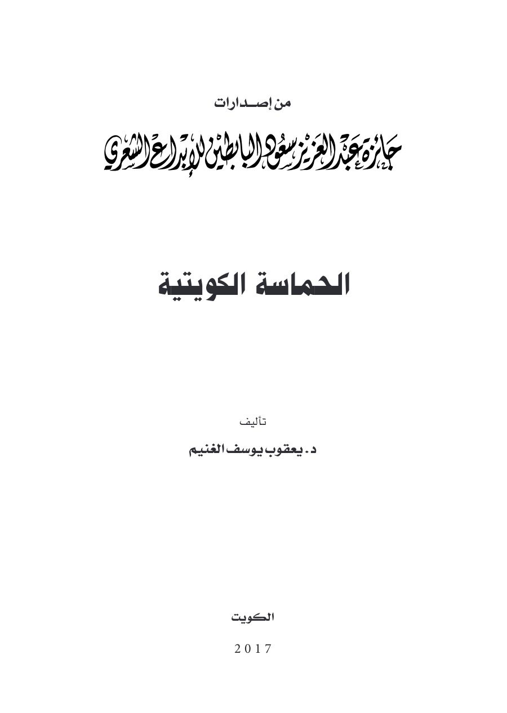
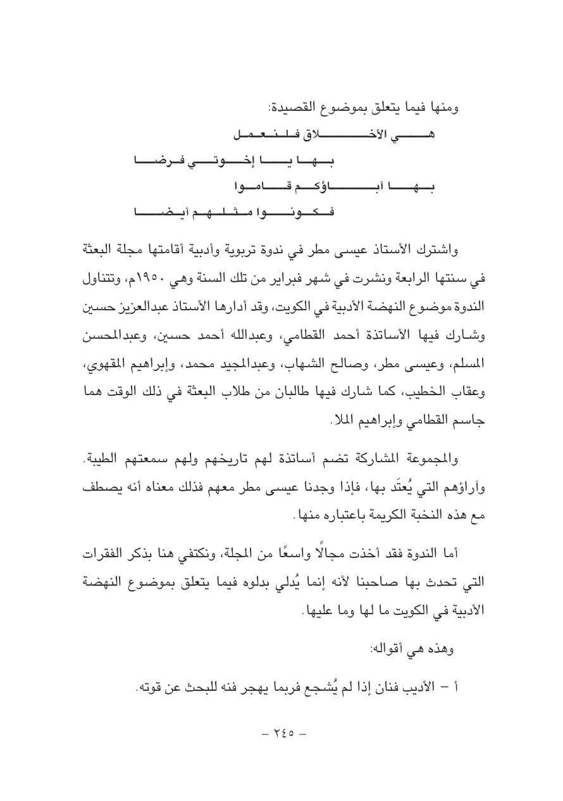

February 1950, published 2017 · Book pages, Dr Yacoub Yousef Al-Ghunaim, Al-Hamasa Al-Kuwaitiya, Abdulaziz Saud Al-Babtain Prize, Kuwait, 2017
Al-Hamasa Al-Kuwaitiya: the brothers Ahmed and Jassim Al-Qatami at the Al-Ba’tha seminar of February 1950
What it is
Dr Al-Ghunaim writes that Eissa Matar took part in an educational and literary seminar held by Al-Ba’tha in its fourth year, published in February 1950, on the literary awakening in Kuwait, led by Abdulaziz Hussein. Two students of the mission took part: Jassim Al-Qatami and Ibrahim Al-Mulla. The teachers included Ahmed Al-Qatami, his brother.
Why it matters
Shows Jassim among the students in a 1950 literary seminar.
Page copies


Sources
Dr Yacoub Yousef Al-Ghunaim, Al-Hamasa Al-Kuwaitiya, Kuwait, 2017, page 245
How this text was made: Page copies of a published book. The teacher «Ahmed Al-Qatami» is Ahmed Abdulaziz Al-Qatami, Jassim’s brother (Noor Faisal Al-Qatami, 21 November 2026).
Open in the interactive site